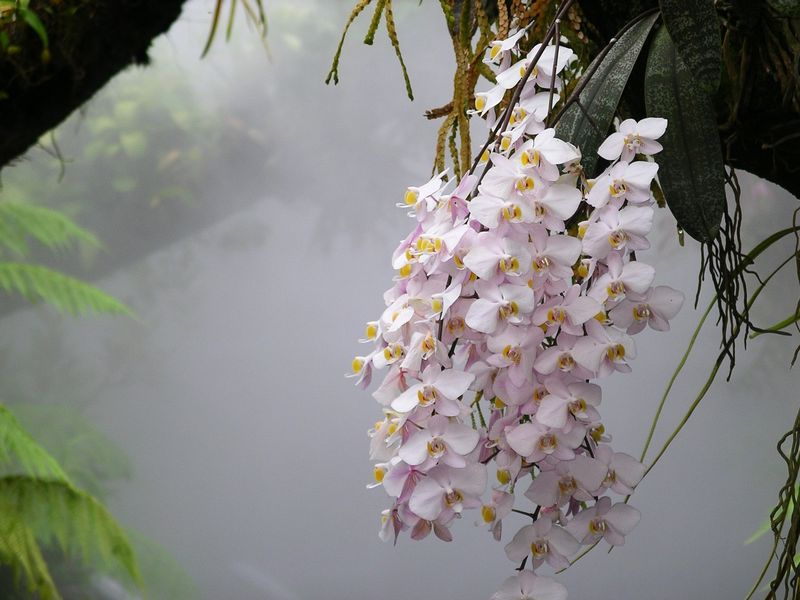

Фаленопсис
Фаленопсис (Phalaenopsis) е една от най-популярните орхидеи, известна със своите големи и елегантни цветя, които могат да бъдат в различни цветове, като бяло, розово, лилаво и жълто. Този вид орхидея е подходящ за отглеждане в домашни условия.
Основни характеристики:- Цветя: Големи и дълготрайни, често с красиви райета или петна.
- Листата: Месести, зелени или светло-зелени.
- Растеж: Среден размер, около 30-50 см, с дълги цветоносни стъбла.
- Светлина: Обича ярка, но разсеяна светлина. Избягвайте пряката слънчева светлина.
- Температура: Идеални температури са между 18-25°C през деня и 15-18°C през нощта.
- Поливане: Поливайте умерено, когато субстратът е почти сух. Не обича да е твърде влажен.
- Влажност: Предпочита влажност около 50-70%. Може да се използва овлажнител.
- Подхранване: Използвайте тор за орхидеи веднъж месечно през зимата и два пъти през лятото.
- Пресаждане: Пресаждайте на всеки 2-3 години, когато субстратът започне да се разпада.
Фаленопсисът цъфти обикновено през зимата и пролетта, като цветята могат да продължат да цъфтят 2-3 месеца.
С правилната грижа, фаленопсисът ще се радва на красиви цветя и дълъг живот!
